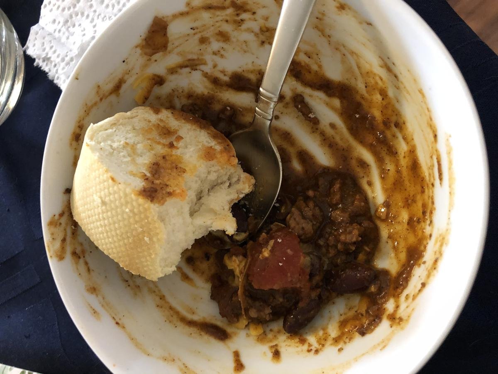

Based on Alex's Aunt's recipe
Personal rating: 4 / 5

2-3 Tbsp butter
1/2 cup onion, chopped and
1/2 garlic (bulb?), chopped
1-2 lbs 80% lean ground beef
1.25 cups canned whole tomatoes
4 cups kidney beans
1/2 bay leaf
1/2 tsp or more of salt
1 can Hormel chili (with or without beans)
Add spices from 2 Alarm Chili Mix (or any boxed chili mix)
!!! tip Add the masala ~20 minutes before taking out of the oven to thicken the chili
!!! tip I only added a tiny bit of the red pepper and put the remainder in a dish so people could add it if they wanted it hotter